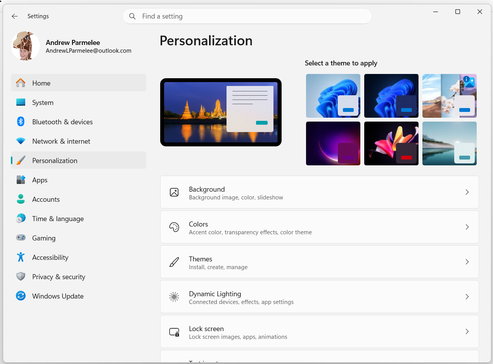
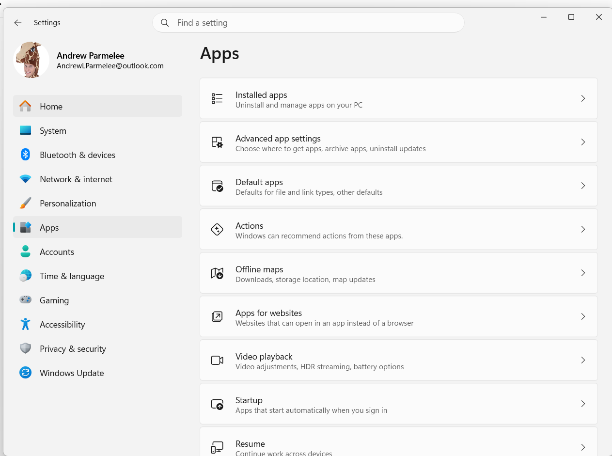
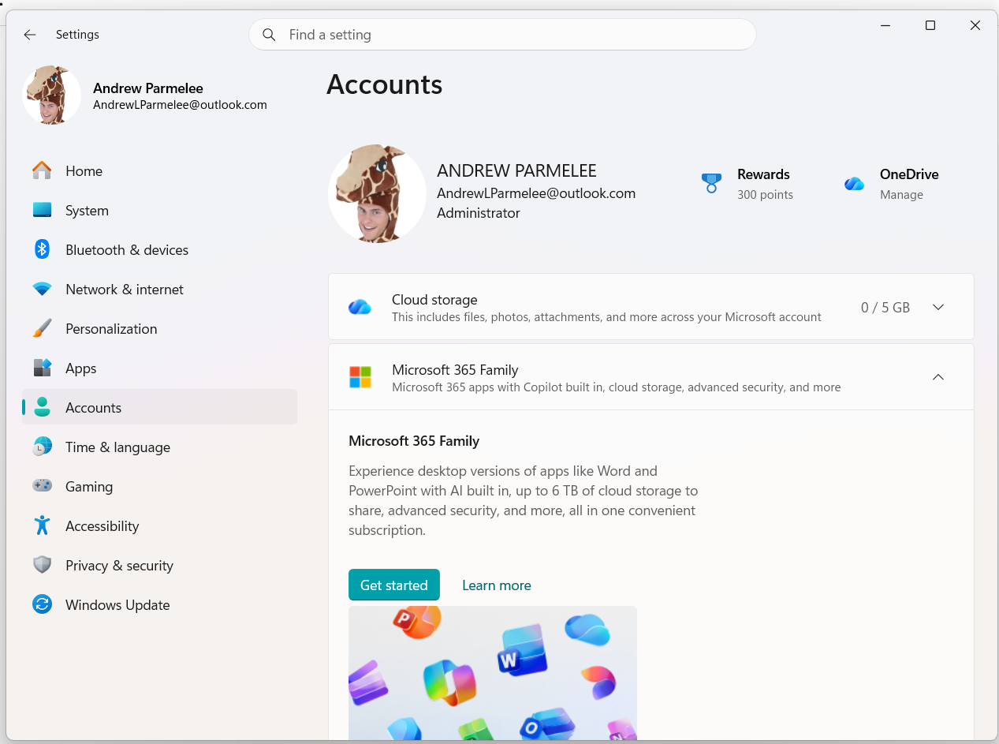
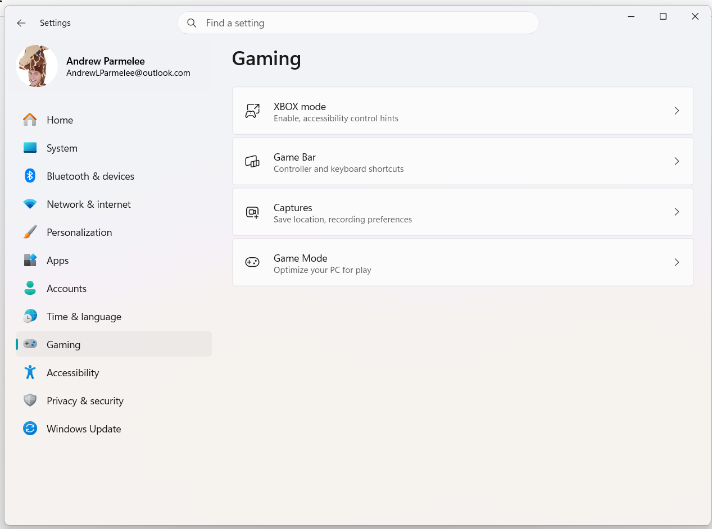
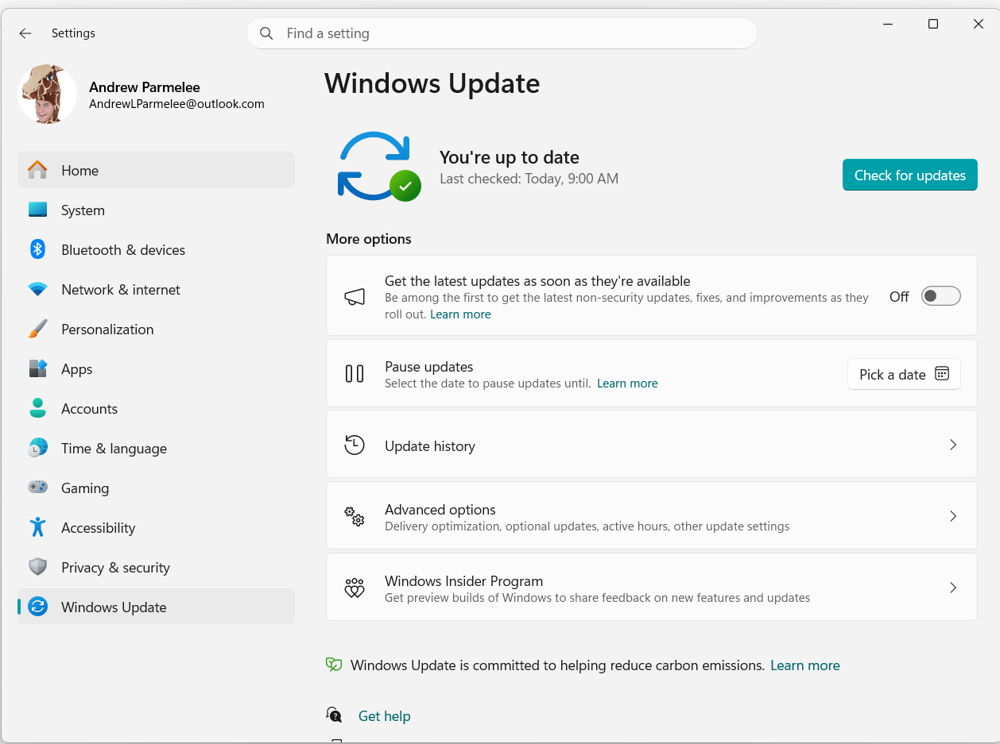

.png)
System (Settings)
Settings › SystemManage Display resolution, Sound outputs, Notifications, Focus Assist, Storage Sense drive cleanup, and Remote Desktop access.
1.62
Modern Settings categories: System, Devices, Network & Internet, Personalization, Apps, Accounts, and more.
Display, peripherals, and connectivity in the modern Settings app.
Manage Display resolution, Sound outputs, Notifications, Focus Assist, Storage Sense drive cleanup, and Remote Desktop access.
.png)
Pair Bluetooth devices, add printers or scanners, adjust touchpad sensitivity, and manage USB connection notifications.

Toggle Wi-Fi or Ethernet, configure VPN connections, set up proxy servers, view Data Usage limits, and perform Network Reset.
Look and feel, default apps, and sign-in identities.

Customize Desktop background, colors, Lock Screen images, system Themes, Fonts, and Start menu or Taskbar behaviors.

Uninstall modern UWP apps and legacy software, set default apps by protocol or file type, and manage startup applications.

Sign in with Microsoft account, manage Work or School connections, set up Windows Hello PIN or biometrics, and manage family accounts.
Language packs, Game Mode, permissions, and Windows Update.

Set time zone automatically, sync clock servers, add language packs, configure regional formats, and adjust speech or keyboard input.

Configure Xbox Game Bar, adjust Game Mode settings for hardware performance allocation, and manage screen recording options.

Control app permissions for hardware like Camera and Microphone, manage background app permissions, and configure diagnostic data.

Manage Windows Update schedules, Delivery Optimization, Windows Security Defender, File History Backup, and Reset This PC recovery.